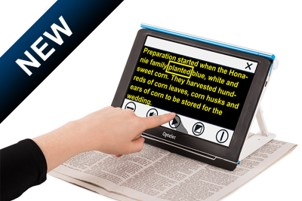

Information
Information on technical equipment specifications applicable to the visually impaired and partially applicable to the visually impaired in IAC Georgia
3. Optelec Compact 10 HD Speech
-
Full page Text-to-Speech, the Compact 10 HD Speech offers all benefits of a desktop
video magnifier, but in a much smaller, foldable, and portable design. -

Features
① Let the Compact 10 HD Speech read for you
: The Compact 10 HD Speech magnifies newspapers, letters, and magazines for viewing of text,
pictures, and other details. Its purposely designed swing-out arm opens a whole new range of
possibilities. It allows the Compact 10 HD Speech to capture full-page documents and then read
them to you with one press on the touchscreen. A convenient indicator at the foot of the Compact
10 HD Speech tells you exactly where to place the document you want to read. Just place the
document, take a snapshot, and relax while the Compact 10 HD Speech reads text to you.
② View objects and photos
: With the arm unfolded, you can also look at photos, view packaging and product labels, and read
round cans, all while holding objects naturally in your hand. The arm even allows you to write
your signature and finish crossword puzzles.
③ Faster reading
: The Compact 10 HD Speech has a large, High Definition 10” touch screen. With over 50% more
screen area than 7” units, you can fit more text on the screen, allowing you to read faster than
you could with smaller magnifiers.
④ Ready when you need it
: For quick reading tasks, the Compact 10 HD Speech is there for you. It wakes up with one press
of the power button and is ready, just like your phone.
: The Compact 10 HD Speech magnifies newspapers, letters, and magazines for viewing of text,
pictures, and other details. Its purposely designed swing-out arm opens a whole new range of
possibilities. It allows the Compact 10 HD Speech to capture full-page documents and then read
them to you with one press on the touchscreen. A convenient indicator at the foot of the Compact
10 HD Speech tells you exactly where to place the document you want to read. Just place the
document, take a snapshot, and relax while the Compact 10 HD Speech reads text to you.
② View objects and photos
: With the arm unfolded, you can also look at photos, view packaging and product labels, and read
round cans, all while holding objects naturally in your hand. The arm even allows you to write
your signature and finish crossword puzzles.
③ Faster reading
: The Compact 10 HD Speech has a large, High Definition 10” touch screen. With over 50% more
screen area than 7” units, you can fit more text on the screen, allowing you to read faster than
you could with smaller magnifiers.
④ Ready when you need it
: For quick reading tasks, the Compact 10 HD Speech is there for you. It wakes up with one press
of the power button and is ready, just like your phone.
Specifications
- Large 10-inch high brightness touch screen
- Continuous zoom: Zoom from less than 0.5x to more than 22x
- 3 High Definition 13MP auto-focus cameras for Reading, Full Page and Overview
- High contrast semi-colors for easier reading
(set up to 4 combinations from a possible choice of 16)
- Reversible USB C connector for charging
- Rechargeable battery offering approximately 3.5 hours continuous use
- Dimensions: 261 x 189 x 36 mm / 10.28 x 7.44 x 1.42 in
- Weight: 915 grams / 2.02 lb
- Continuous zoom: Zoom from less than 0.5x to more than 22x
- 3 High Definition 13MP auto-focus cameras for Reading, Full Page and Overview
- High contrast semi-colors for easier reading
(set up to 4 combinations from a possible choice of 16)
- Reversible USB C connector for charging
- Rechargeable battery offering approximately 3.5 hours continuous use
- Dimensions: 261 x 189 x 36 mm / 10.28 x 7.44 x 1.42 in
- Weight: 915 grams / 2.02 lb
Addr. #99 Vazha-Pshavela Avenue, 0186, Tbilisi, Georgia
Addr. ვაჟა-ფშაველას გამზირი 99, 0182 Tbilisi, Georgia
Tel. +995 577 15 70 21
NIA KOREA
Addr. ვაჟა-ფშაველას გამზირი 99, 0182 Tbilisi, Georgia
Tel. +995 577 15 70 21